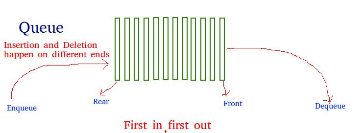
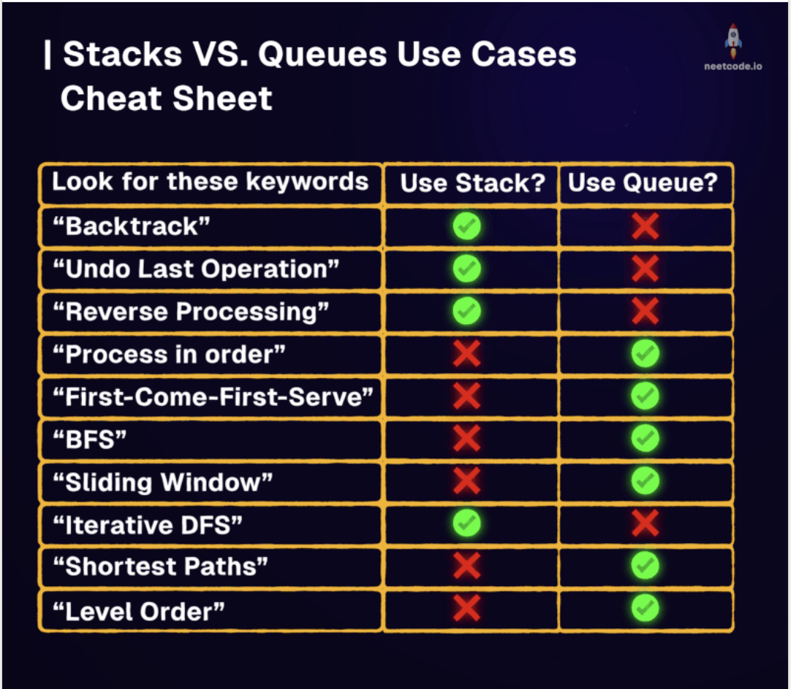

Queue
Last updated: Apr 25, 2026Table of Contents
- Overview
- Key Properties
- Implementation Options
- References
- Problem Categories
- Pattern 1: BFS & Level-Order Traversal
- Pattern 2: Sliding Window with Queue
- Pattern 3: Design Queue Variants
- Pattern 4: Monotonic Queue
- Pattern 5: Stream Processing
- Pattern 6: Task Scheduling & Simulation
- Templates & Algorithms
- Template Comparison Table
- Template 1: Basic Queue Operations
- Template 2: Level-Order BFS Pattern
- Template 3: Circular Queue Pattern
- Template 4: Monotonic Queue Pattern
- Template 5: Queue Using Stacks Pattern
- Template 6: Stream Processing Pattern
- Problems by Pattern
- Pattern-Based Problem Tables
- Pattern Selection Strategy
- Basic Operations Reference
- Python collections.deque
- Java Queue & Deque Operations
- Summary & Quick Reference
- Complexity Quick Reference
- Template Quick Reference
- Common Patterns & Tricks
- Problem-Solving Steps
- Common Mistakes & Tips
- Interview Tips
- Advanced Techniques
- Related Topics
- LC Examples
- 2-1) Sliding Window Maximum (LC 239) — Monotonic Deque
- 2-2) Design Circular Queue (LC 622) — Array with Head/Count
Queue Data Structure


Overview
Queue is a linear data structure that follows the First In First Out (FIFO) principle. Elements are added at the rear (enqueue) and removed from the front (dequeue), similar to a real-world queue or line.
Key Properties
- Time Complexity:
- Enqueue: O(1)
- Dequeue: O(1) for linked list, O(n) for array
- Peek/Front: O(1)
- Search: O(n)
- Space Complexity: O(n)
- Core Idea: First element added is the first to be removed (FIFO)
- When to Use: BFS traversal, level-order processing, task scheduling, buffering
Implementation Options
- Array-based: Fixed size, circular buffer for efficiency
- Linked List: Dynamic size, efficient operations
- Deque: Double-ended queue for both ends access
- Priority Queue: Elements processed by priority (covered separately)
References
Problem Categories
Pattern 1: BFS & Level-Order Traversal
- Description: Layer-by-layer processing in trees and graphs
- Examples: LC 102, 103, 107, 199, 513, 515, 637
- Pattern: Process all nodes at current level before next level
Pattern 2: Sliding Window with Queue
- Description: Maintaining window state with FIFO ordering
- Examples: LC 239, 346, 362, 933, 1438
- Pattern: Use deque for O(1) operations at both ends
Pattern 3: Design Queue Variants
- Description: Implementing queue with constraints or special features
- Examples: LC 225, 232, 622, 641, 1670
- Pattern: Use stacks, arrays, or linked lists with specific logic
Pattern 4: Monotonic Queue
- Description: Maintaining increasing/decreasing order in queue
- Examples: LC 239, 862, 907, 1425, 1696
- Pattern: Remove elements that break monotonic property
Pattern 5: Stream Processing
- Description: Processing continuous data streams
- Examples: LC 346, 352, 362, 703, 933
- Pattern: Fixed-size window or time-based eviction
Pattern 6: Task Scheduling & Simulation
- Description: Simulating real-world queuing systems
- Examples: LC 621, 1429, 1834, 2073
- Pattern: Process tasks in order with constraints
Templates & Algorithms
Template Comparison Table
| Template Type | Use Case | Implementation | Complexity | When to Use |
|---|---|---|---|---|
| Basic Queue | Simple FIFO | Array/LinkedList | O(1) ops | General queue operations |
| Circular Queue | Fixed size buffer | Array with pointers | O(1) ops | Bounded buffer, ring buffer |
| Deque | Both ends access | Double linked list | O(1) ops | Sliding window, palindrome |
| Monotonic Queue | Order maintenance | Deque with logic | O(1) amortized | Max/min in window |
| Queue with Stacks | Queue using stacks | Two stacks | O(1) amortized | Interview problems |
| Level-Order BFS | Tree/graph traversal | Queue + size tracking | O(n) | Layer processing |
Template 1: Basic Queue Operations
python
# Python - Using collections.deque (recommended)
from collections import deque
class Queue:
def __init__(self):
self.queue = deque()
def enqueue(self, item):
self.queue.append(item) # Add to rear
def dequeue(self):
if not self.is_empty():
return self.queue.popleft() # Remove from front
return None
def front(self):
if not self.is_empty():
return self.queue[0]
return None
def is_empty(self):
return len(self.queue) == 0
def size(self):
return len(self.queue)
# Using list (less efficient for dequeue)
class SimpleQueue:
def __init__(self):
self.queue = []
def enqueue(self, item):
self.queue.append(item)
def dequeue(self):
if self.queue:
return self.queue.pop(0) # O(n) operation
return None
java
// Java - Using LinkedList
import java.util.*;
class Queue<T> {
private LinkedList<T> queue;
public Queue() {
queue = new LinkedList<>();
}
public void enqueue(T item) {
queue.addLast(item); // Add to rear
}
public T dequeue() {
if (!isEmpty()) {
return queue.removeFirst(); // Remove from front
}
return null;
}
public T front() {
if (!isEmpty()) {
return queue.getFirst();
}
return null;
}
public boolean isEmpty() {
return queue.isEmpty();
}
public int size() {
return queue.size();
}
}
// Using Java Queue interface
Queue<Integer> queue = new LinkedList<>();
queue.offer(1); // enqueue
queue.poll(); // dequeue
queue.peek(); // front
Template 2: Level-Order BFS Pattern
python
# Python - Tree level-order traversal
def levelOrder(root):
if not root:
return []
result = []
queue = deque([root])
while queue:
level_size = len(queue)
current_level = []
# Process all nodes at current level
for _ in range(level_size):
node = queue.popleft()
current_level.append(node.val)
if node.left:
queue.append(node.left)
if node.right:
queue.append(node.right)
result.append(current_level)
return result
# Graph BFS with distance
def bfs(graph, start):
visited = set([start])
queue = deque([(start, 0)]) # (node, distance)
while queue:
node, dist = queue.popleft()
for neighbor in graph[node]:
if neighbor not in visited:
visited.add(neighbor)
queue.append((neighbor, dist + 1))
return visited
java
// Java - Level-order traversal
public List<List<Integer>> levelOrder(TreeNode root) {
List<List<Integer>> result = new ArrayList<>();
if (root == null) return result;
Queue<TreeNode> queue = new LinkedList<>();
queue.offer(root);
while (!queue.isEmpty()) {
int levelSize = queue.size();
List<Integer> currentLevel = new ArrayList<>();
for (int i = 0; i < levelSize; i++) {
TreeNode node = queue.poll();
currentLevel.add(node.val);
if (node.left != null) {
queue.offer(node.left);
}
if (node.right != null) {
queue.offer(node.right);
}
}
result.add(currentLevel);
}
return result;
}
Template 3: Circular Queue Pattern
python
# Python - Fixed size circular queue
class CircularQueue:
def __init__(self, k):
self.queue = [0] * k
self.capacity = k
self.head = 0
self.count = 0
def enqueue(self, value):
if self.is_full():
return False
# Calculate tail position
tail = (self.head + self.count) % self.capacity
self.queue[tail] = value
self.count += 1
return True
def dequeue(self):
if self.is_empty():
return False
self.head = (self.head + 1) % self.capacity
self.count -= 1
return True
def front(self):
if self.is_empty():
return -1
return self.queue[self.head]
def rear(self):
if self.is_empty():
return -1
tail = (self.head + self.count - 1) % self.capacity
return self.queue[tail]
def is_empty(self):
return self.count == 0
def is_full(self):
return self.count == self.capacity
java
// Java - Circular Queue
class CircularQueue {
private int[] queue;
private int head;
private int count;
private int capacity;
public CircularQueue(int k) {
queue = new int[k];
capacity = k;
head = 0;
count = 0;
}
public boolean enqueue(int value) {
if (isFull()) return false;
int tail = (head + count) % capacity;
queue[tail] = value;
count++;
return true;
}
public boolean dequeue() {
if (isEmpty()) return false;
head = (head + 1) % capacity;
count--;
return true;
}
public int front() {
if (isEmpty()) return -1;
return queue[head];
}
public int rear() {
if (isEmpty()) return -1;
int tail = (head + count - 1) % capacity;
return queue[tail];
}
public boolean isEmpty() {
return count == 0;
}
public boolean isFull() {
return count == capacity;
}
}
Template 4: Monotonic Queue Pattern
python
# Python - Monotonic decreasing queue for sliding window maximum
class MonotonicQueue:
def __init__(self):
self.queue = deque()
def push(self, val):
# Remove smaller elements from rear
while self.queue and self.queue[-1] < val:
self.queue.pop()
self.queue.append(val)
def pop(self, val):
# Remove if it's the front element
if self.queue and self.queue[0] == val:
self.queue.popleft()
def max(self):
# Front is always the maximum
return self.queue[0] if self.queue else None
# Sliding window maximum
def maxSlidingWindow(nums, k):
from collections import deque
dq = deque() # Store indices
result = []
for i in range(len(nums)):
# Remove indices outside window
while dq and dq[0] <= i - k:
dq.popleft()
# Remove smaller elements
while dq and nums[dq[-1]] <= nums[i]:
dq.pop()
dq.append(i)
# Add to result after first window
if i >= k - 1:
result.append(nums[dq[0]])
return result
java
// Java - Monotonic Queue
class MonotonicQueue {
private LinkedList<Integer> queue;
public MonotonicQueue() {
queue = new LinkedList<>();
}
public void push(int val) {
// Remove smaller elements from rear
while (!queue.isEmpty() && queue.getLast() < val) {
queue.pollLast();
}
queue.addLast(val);
}
public void pop(int val) {
// Remove if it's the front element
if (!queue.isEmpty() && queue.getFirst() == val) {
queue.pollFirst();
}
}
public int max() {
return queue.isEmpty() ? -1 : queue.getFirst();
}
}
// Sliding window maximum
public int[] maxSlidingWindow(int[] nums, int k) {
Deque<Integer> dq = new LinkedList<>();
int[] result = new int[nums.length - k + 1];
int idx = 0;
for (int i = 0; i < nums.length; i++) {
// Remove indices outside window
while (!dq.isEmpty() && dq.peekFirst() <= i - k) {
dq.pollFirst();
}
// Remove smaller elements
while (!dq.isEmpty() && nums[dq.peekLast()] <= nums[i]) {
dq.pollLast();
}
dq.offerLast(i);
// Add to result after first window
if (i >= k - 1) {
result[idx++] = nums[dq.peekFirst()];
}
}
return result;
}
Template 5: Queue Using Stacks Pattern
python
# Python - Implement queue using two stacks
class MyQueue:
def __init__(self):
self.in_stack = [] # For enqueue
self.out_stack = [] # For dequeue
def push(self, x):
self.in_stack.append(x)
def pop(self):
self.peek() # Ensure out_stack has elements
return self.out_stack.pop()
def peek(self):
if not self.out_stack:
# Transfer all from in_stack to out_stack
while self.in_stack:
self.out_stack.append(self.in_stack.pop())
return self.out_stack[-1] if self.out_stack else None
def empty(self):
return len(self.in_stack) == 0 and len(self.out_stack) == 0
java
// Java - Queue using stacks
class MyQueue {
private Stack<Integer> inStack;
private Stack<Integer> outStack;
public MyQueue() {
inStack = new Stack<>();
outStack = new Stack<>();
}
public void push(int x) {
inStack.push(x);
}
public int pop() {
peek(); // Ensure outStack has elements
return outStack.pop();
}
public int peek() {
if (outStack.isEmpty()) {
// Transfer all from inStack to outStack
while (!inStack.isEmpty()) {
outStack.push(inStack.pop());
}
}
return outStack.peek();
}
public boolean empty() {
return inStack.isEmpty() && outStack.isEmpty();
}
}
Template 6: Stream Processing Pattern
python
# Python - Moving average from data stream
class MovingAverage:
def __init__(self, size):
self.queue = deque()
self.window_sum = 0
self.size = size
def next(self, val):
self.queue.append(val)
self.window_sum += val
if len(self.queue) > self.size:
removed = self.queue.popleft()
self.window_sum -= removed
return self.window_sum / len(self.queue)
# Hit counter for last 5 minutes
class HitCounter:
def __init__(self):
self.queue = deque()
def hit(self, timestamp):
self.queue.append(timestamp)
def getHits(self, timestamp):
# Remove hits older than 5 minutes (300 seconds)
while self.queue and self.queue[0] <= timestamp - 300:
self.queue.popleft()
return len(self.queue)
java
// Java - Moving average
class MovingAverage {
private Queue<Integer> queue;
private int windowSum;
private int size;
public MovingAverage(int size) {
queue = new LinkedList<>();
this.size = size;
windowSum = 0;
}
public double next(int val) {
queue.offer(val);
windowSum += val;
if (queue.size() > size) {
windowSum -= queue.poll();
}
return (double) windowSum / queue.size();
}
}
Problems by Pattern
Pattern-Based Problem Tables
BFS & Level-Order Problems
| Problem | LC # | Key Technique | Difficulty |
|---|---|---|---|
| Binary Tree Level Order Traversal | 102 | Queue + level tracking | Medium |
| Binary Tree Zigzag Level Order | 103 | Queue + direction flag | Medium |
| Binary Tree Level Order II | 107 | Queue + reverse result | Medium |
| Binary Tree Right Side View | 199 | Queue + last in level | Medium |
| Find Bottom Left Tree Value | 513 | Queue + track level | Medium |
| Find Largest Value in Each Tree Row | 515 | Queue + max per level | Medium |
| Average of Levels in Binary Tree | 637 | Queue + sum per level | Easy |
| Maximum Width of Binary Tree | 662 | Queue + position encoding | Medium |
| Populating Next Right Pointers | 116 | Queue + level connection | Medium |
| N-ary Tree Level Order Traversal | 429 | Queue + multiple children | Medium |
Sliding Window Queue Problems
| Problem | LC # | Key Technique | Difficulty |
|---|---|---|---|
| Sliding Window Maximum | 239 | Monotonic deque | Hard |
| Moving Average from Data Stream | 346 | Fixed size queue | Easy |
| Design Hit Counter | 362 | Time-based eviction | Medium |
| Number of Recent Calls | 933 | Time window queue | Easy |
| Longest Subarray Absolute Diff | 1438 | Two deques (min/max) | Medium |
| Jump Game VI | 1696 | DP + monotonic queue | Medium |
| Constrained Subsequence Sum | 1425 | DP + monotonic queue | Hard |
Design Queue Problems
| Problem | LC # | Key Technique | Difficulty |
|---|---|---|---|
| Implement Stack using Queues | 225 | Two queues or rotation | Easy |
| Implement Queue using Stacks | 232 | Two stacks | Easy |
| Design Circular Queue | 622 | Array with pointers | Medium |
| Design Circular Deque | 641 | Double-ended circular | Medium |
| Design Front Middle Back Queue | 1670 | Two deques balance | Medium |
| Design Most Recently Used Queue | 1756 | Deque + set | Medium |
Monotonic Queue Problems
| Problem | LC # | Key Technique | Difficulty |
|---|---|---|---|
| Sliding Window Maximum | 239 | Decreasing monotonic | Hard |
| Shortest Subarray with Sum K | 862 | Prefix sum + monotonic | Hard |
| Sum of Subarray Minimums | 907 | Monotonic stack/queue | Medium |
| Maximum Score of Good Subarray | 1793 | Monotonic boundaries | Hard |
| Jump Game VI | 1696 | DP + monotonic queue | Medium |
| Longest Continuous Subarray | 1438 | Two monotonic queues | Medium |
Stream Processing Problems
| Problem | LC # | Key Technique | Difficulty |
|---|---|---|---|
| Moving Average from Data Stream | 346 | Fixed window | Easy |
| Data Stream as Disjoint Intervals | 352 | Interval merging | Hard |
| Design Hit Counter | 362 | Time-based queue | Medium |
| Logger Rate Limiter | 359 | Time window | Easy |
| Number of Recent Calls | 933 | Time window | Easy |
| Finding MK Average | 1825 | Multiple queues | Hard |
Task Scheduling Problems
| Problem | LC # | Key Technique | Difficulty |
|---|---|---|---|
| Task Scheduler | 621 | Queue + cooling time | Medium |
| Design a Number Container | 2349 | Queue per number | Medium |
| Time Needed to Buy Tickets | 2073 | Queue simulation | Easy |
| Single-Threaded CPU | 1834 | Queue + priority queue | Medium |
| Number of Visible People in Queue | 1944 | Monotonic stack | Hard |
Pattern Selection Strategy
Problem Analysis Flowchart:
1. Is it a tree/graph traversal problem?
├── YES → Use BFS with Queue
│ ├── Level-order → Track level size
│ └── Shortest path → Track distance
└── NO → Continue to 2
2. Do you need to maintain window order?
├── YES → Use Sliding Window Queue
│ ├── Max/Min → Monotonic queue
│ └── Fixed size → Regular queue
└── NO → Continue to 3
3. Is it a design problem?
├── YES → Choose appropriate structure
│ ├── Fixed size → Circular queue
│ ├── Both ends → Deque
│ └── Stack behavior → Queue with rotation
└── NO → Continue to 4
4. Need monotonic property?
├── YES → Use Monotonic Queue
│ ├── Increasing → Remove larger from rear
│ └── Decreasing → Remove smaller from rear
└── NO → Continue to 5
5. Processing data stream?
├── YES → Use Stream Processing
│ ├── Time window → Remove old entries
│ └── Count window → Fixed size queue
└── NO → Use basic queue operations
Basic Operations Reference
Python collections.deque
python
from collections import deque
# Create deque
dq = deque()
dq = deque([1, 2, 3])
dq = deque(maxlen=10) # Fixed size
# Add elements
dq.append(4) # Add to right: [1,2,3,4]
dq.appendleft(0) # Add to left: [0,1,2,3,4]
dq.extend([5,6]) # Extend right: [0,1,2,3,4,5,6]
dq.extendleft([-2,-1]) # Extend left: [-1,-2,0,1,2,3,4,5,6]
# Remove elements
val = dq.pop() # Remove from right
val = dq.popleft() # Remove from left
# Access elements
first = dq[0] # Access by index
last = dq[-1] # Last element
# Other operations
dq.rotate(2) # Rotate right by 2
dq.rotate(-1) # Rotate left by 1
dq.reverse() # Reverse in-place
dq.clear() # Remove all elements
# Check state
size = len(dq)
is_empty = len(dq) == 0
count = dq.count(value)
index = dq.index(value)
Java Queue & Deque Operations
java
import java.util.*;
// Queue interface (FIFO)
Queue<Integer> queue = new LinkedList<>();
queue.offer(1); // Add to rear (returns boolean)
queue.add(2); // Add to rear (throws exception)
Integer val = queue.poll(); // Remove from front (returns null)
val = queue.remove(); // Remove from front (throws exception)
val = queue.peek(); // View front (returns null)
val = queue.element(); // View front (throws exception)
// Deque interface (double-ended)
Deque<Integer> deque = new LinkedList<>();
// or ArrayDeque for better performance
Deque<Integer> deque = new ArrayDeque<>();
// Add operations
deque.addFirst(1); // Add to front
deque.addLast(2); // Add to rear
deque.offerFirst(0); // Add to front (returns boolean)
deque.offerLast(3); // Add to rear (returns boolean)
// Remove operations
val = deque.removeFirst(); // Remove from front
val = deque.removeLast(); // Remove from rear
val = deque.pollFirst(); // Remove from front (returns null)
val = deque.pollLast(); // Remove from rear (returns null)
// Peek operations
val = deque.peekFirst(); // View front
val = deque.peekLast(); // View rear
val = deque.getFirst(); // View front (throws exception)
val = deque.getLast(); // View rear (throws exception)
// Stack operations on Deque
deque.push(5); // Push to front (stack top)
val = deque.pop(); // Pop from front (stack top)
Summary & Quick Reference
Complexity Quick Reference
| Operation | Array Queue | Linked Queue | Deque | Circular Queue |
|---|---|---|---|---|
| Enqueue | O(1) | O(1) | O(1) | O(1) |
| Dequeue | O(n) | O(1) | O(1) | O(1) |
| Peek Front | O(1) | O(1) | O(1) | O(1) |
| Peek Rear | O(1) | O(1) | O(1) | O(1) |
| Space | O(n) | O(n) | O(n) | O(k) fixed |
Template Quick Reference
| Template | Pattern | Key Code |
|---|---|---|
| BFS | Level processing | for _ in range(level_size) |
| Circular | Fixed buffer | (head + count) % capacity |
| Monotonic | Order maintenance | while q and q[-1] < val: q.pop() |
| Two Stacks | Queue simulation | if not out: transfer from in |
| Sliding | Window tracking | if i >= k-1: result.append() |
| Stream | Time/count window | while old: queue.popleft() |
Common Patterns & Tricks
Level-Order Processing
python
# Process nodes level by level
level_size = len(queue)
for _ in range(level_size):
node = queue.popleft()
# Process node
# Add children
Circular Index Calculation
python
# Wrap around in circular buffer
tail_index = (head + count) % capacity
next_index = (current + 1) % capacity
Monotonic Property Maintenance
python
# Decreasing monotonic queue
while queue and queue[-1] < new_val:
queue.pop()
queue.append(new_val)
Two-Stack Queue Optimization
python
# Amortized O(1) operations
if not out_stack:
while in_stack:
out_stack.append(in_stack.pop())
Problem-Solving Steps
-
Identify Queue Usage
- FIFO processing needed?
- Level-by-level traversal?
- Sliding window with order?
- Stream processing?
-
Choose Implementation
- Simple queue → deque or LinkedList
- Fixed size → Circular queue
- Both ends → Deque
- Priority → Priority Queue (separate DS)
-
Handle Edge Cases
- Empty queue operations
- Full queue (for bounded queues)
- Single element scenarios
- Wraparound in circular queues
-
Optimize Operations
- Use deque for O(1) operations
- Circular buffer for fixed size
- Two stacks for interview problems
- Monotonic for min/max queries
Common Mistakes & Tips
🚫 Common Mistakes:
- Using list.pop(0) in Python (O(n) operation)
- Forgetting to track level size in BFS
- Not handling circular wraparound correctly
- Mixing up queue.poll() vs queue.remove() in Java
- Not maintaining monotonic property correctly
✅ Best Practices:
- Always use collections.deque in Python
- Use ArrayDeque over LinkedList in Java for better performance
- Track queue size explicitly for level-order
- Clear old elements in sliding window
- Use modulo for circular indexing
Interview Tips
-
Clarify Requirements
- Fixed or dynamic size?
- Need access to both ends?
- Thread safety required?
- Space constraints?
-
BFS vs DFS Decision
- BFS → Shortest path, level-order
- DFS → Path finding, backtracking
- Queue for BFS, Stack for DFS
-
Implementation Choice
- Python: Always prefer deque
- Java: ArrayDeque for performance
- Consider circular for bounded problems
-
Common Follow-ups
- Make it thread-safe
- Handle multiple producers/consumers
- Implement with different constraints
- Optimize space/time complexity
Advanced Techniques
Lock-Free Queue
- Used in concurrent programming
- Compare-and-swap operations
- Michael & Scott algorithm
Priority Deque
- Combines priority queue and deque
- Double-ended priority queue
- Interval heap implementation
Persistent Queue
- Immutable queue with versioning
- Functional programming style
- Uses two stacks internally
Related Topics
- Stack: LIFO vs FIFO comparison
- Priority Queue: Ordered processing
- BFS: Primary application of queues
- Circular Buffer: Fixed-size queue implementation
- Producer-Consumer: Classic queue application
LC Examples
2-1) Sliding Window Maximum (LC 239) — Monotonic Deque
Maintain a decreasing deque of indices; front is always the current window maximum.
java
// LC 239 - Sliding Window Maximum
// IDEA: Monotonic deque — remove out-of-window front, remove smaller rear, front = max
// time = O(N), space = O(k)
public int[] maxSlidingWindow(int[] nums, int k) {
int n = nums.length;
int[] ans = new int[n - k + 1];
Deque<Integer> dq = new ArrayDeque<>(); // indices, decreasing by value
for (int i = 0; i < n; i++) {
while (!dq.isEmpty() && dq.peekFirst() < i - k + 1) dq.pollFirst();
while (!dq.isEmpty() && nums[dq.peekLast()] < nums[i]) dq.pollLast();
dq.addLast(i);
if (i >= k - 1) ans[i - k + 1] = nums[dq.peekFirst()];
}
return ans;
}
2-2) Design Circular Queue (LC 622) — Array with Head/Count
Fixed-size array; track head index and count; use modular arithmetic for wrap-around.
java
// LC 622 - Design Circular Queue
// IDEA: Fixed array + head pointer + count; tail = (head + count - 1) % capacity
// time = O(1) all ops, space = O(k)
class MyCircularQueue {
int[] data;
int head, count, capacity;
public MyCircularQueue(int k) { data = new int[k]; capacity = k; }
public boolean enQueue(int value) {
if (isFull()) return false;
data[(head + count) % capacity] = value;
count++;
return true;
}
public boolean deQueue() {
if (isEmpty()) return false;
head = (head + 1) % capacity;
count--;
return true;
}
public int Front() { return isEmpty() ? -1 : data[head]; }
public int Rear() { return isEmpty() ? -1 : data[(head + count - 1) % capacity]; }
public boolean isEmpty() { return count == 0; }
public boolean isFull() { return count == capacity; }
}